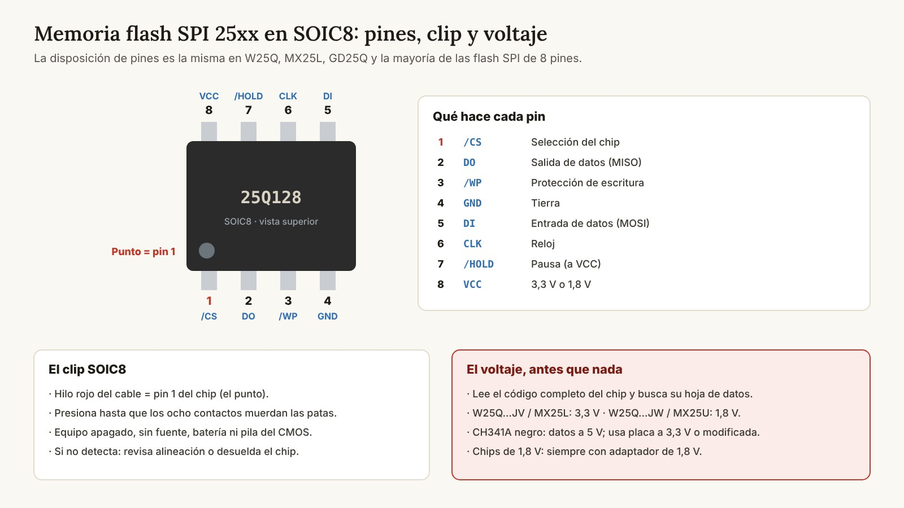
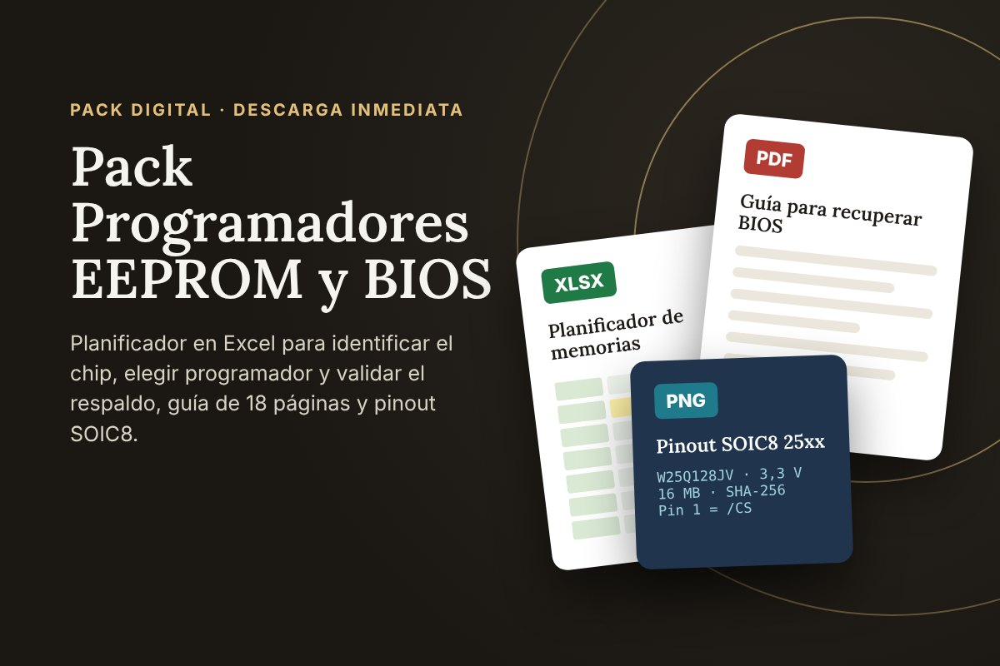

Qué cubre esta guía
- Por qué necesitas un programador universal de EEPROM y BIOS
- Tipos de memoria: EEPROM, Flash SPI y su relación con la BIOS
- Comparativa de los mejores programadores universales
- CH341A: la puerta de entrada económica
- TL866II Plus y T48 (TL866-3G): el equilibrio precio-versatilidad
- RT809F y RT809H: potencia intermedia para talleres
- Xeltek SuperPro: la gama profesional e industrial
- Adaptadores y clips: SOIC8, PLCC32, TSOP y DIP
- Voltajes de operación: por qué 1.8V, 3.3V y 5V importan
- Software de programación: NeoProgrammer, AsProgrammer y flashrom
- Guía paso a paso: leer y flashear un chip BIOS SOIC8
- Errores comunes y solución de problemas
- Casos de uso reales y cómo elegir tu programador
- Preguntas frecuentes

Pack Programadores EEPROM y BIOS: recupera la BIOS sin quemar el chip
Todo lo de esta guía, convertido en herramientas: identifica el chip y su voltaje, elige el programador correcto y no escribas nada sin un respaldo verificado.
- Planificador en Excel (7 hojas): identificador de chip por código (familia, voltaje y tamaño exacto del archivo), comparador de programadores según los trabajos que harás, validador de respaldo con huella SHA-256, procedimiento paso a paso, registro de trabajos y presupuesto.
- Guía en PDF (18 páginas): qué memoria tiene tu equipo, voltajes por familia, el CH341A sin riesgos, TL866II Plus, T48 y RT809H, clip o desoldar, comandos de flashrom, el respaldo verificado, cómo preparar el archivo sin perder la MAC ni el número de serie, casos frecuentes y solución de problemas.
- Pinout de la flash SPI 25xx en SOIC8 con el clip y los voltajes, en alta resolución.
Al pagar descargas un archivo .zip con el planificador (.xlsx), la guía (.pdf), el pinout (.png) y las instrucciones. El planificador se abre en Excel, LibreOffice y Google Sheets. No incluye el programador ni archivos de BIOS. Licencia de uso personal. Por ser contenido digital de descarga inmediata, no tiene derecho a retracto; si un archivo llega dañado o no abre, te lo reponemos o devolvemos el dinero.
Por qué necesitas un programador universal de EEPROM y BIOS
Existe un tipo de falla que ningún antivirus, formateo ni reinstalación de sistema operativo puede solucionar: una placa madre que no enciende, no muestra imagen ni emite pitidos porque el chip donde vive la BIOS o UEFI se corrompió, quedó a medio flashear tras un corte de luz, o fue víctima de un firmware malicioso. Lo mismo ocurre con routers que quedan "ladrillados" tras una actualización fallida, tarjetas de video cuya vBIOS se dañó en un crossflash, o monitores que pierden su configuración EDID almacenada en un pequeño chip EEPROM.
En todos estos casos, el sistema afectado no puede arrancar su propio software para repararse a sí mismo, porque el software dañado es justamente lo que impide que arranque. La única forma de recuperarlo es acceder directamente al chip de memoria a nivel de hardware, sin depender de que el equipo funcione, leer o escribir su contenido byte por byte desde un dispositivo externo. Esa es exactamente la función de un programador universal: una herramienta capaz de comunicarse directamente con decenas de miles de modelos distintos de chips de memoria y microcontroladores, normalmente a través de un zócalo, un clip o un adaptador específico, sin necesidad de que el circuito donde vive el chip esté siquiera encendido.
A diferencia de un programador dedicado a una sola familia de chips (como los grabadores ISP usados exclusivamente para microcontroladores AVR), un programador universal mantiene una base de datos con la información eléctrica y de protocolo de miles de chips distintos —EEPROM, Flash NOR, Flash NAND, microcontroladores PIC y AVR, memorias de tarjetas SIM, entre otros— lo que lo convierte en una herramienta central en cualquier taller de reparación de electrónica, laboratorio de hardware hacking, o banco de trabajo de un aficionado avanzado.
Tipos de memoria: EEPROM, Flash SPI y su relación con la BIOS
Antes de comparar programadores es importante entender qué tipo de chip se va a programar, porque no todos los "programadores universales" cubren las mismas familias con la misma calidad. La palabra EEPROM (Electrically Erasable Programmable Read-Only Memory) es, en rigor, una categoría amplia que incluye varias tecnologías con protocolos de comunicación distintos entre sí.
| Tipo de memoria | Protocolo | Encapsulado común | Dónde se encuentra |
|---|---|---|---|
| EEPROM serial I2C (24Cxx) | I2C de 2 hilos | SOIC8, DIP8 | Módulos SPD de RAM, monitores, algunos routers antiguos |
| EEPROM serial Microwire (93Cxx) | Microwire de 3 hilos | SOIC8, DIP8 | Tarjetas de red, electrodomésticos, tableros de autos y equipos industriales |
| Flash NOR SPI (25xx: W25Q, MX25L, S25FL) | SPI de 4 hilos | SOIC8, WSON8 | BIOS/UEFI de placas madre modernas, vBIOS de tarjetas de video, firmware de routers |
| Flash NOR paralela (29xxx, 39xxx) | Bus paralelo de direcciones/datos | PLCC32, TSOP | Equipos industriales y BIOS de PCs hasta mediados de los 2000 (en PLCC32 muchas son memorias LPC/FWH) |
| Flash NAND | Bus paralelo con direccionamiento por páginas | TSOP48, BGA | Routers y equipos embebidos (TSOP48); el eMMC es NAND con controlador integrado en BGA y necesita su propio adaptador |
El dato clave para quien busca reparar BIOS de PC en 2026 es que la inmensa mayoría de las placas madre y tarjetas de video modernas usan Flash NOR SPI en encapsulado SOIC8, identificable por sus 8 patas y un pequeño punto o muesca que marca el pin 1. Esto simplifica bastante la elección del programador: cualquier dispositivo que maneje bien el protocolo SPI de 4 hilos —incluyendo el más económico de esta lista— cubrirá el caso de uso más común sin problema.
Comparativa de los mejores programadores universales
| Modelo | Familias soportadas | Voltajes | Precio aprox. (CLP) | Ideal para |
|---|---|---|---|---|
| CH341A | EEPROM 24/25/93xx, Flash SPI básica | 3,3 V para memorias 25xx en el zócalo; en muchas placas las líneas de datos quedan a 5 V (ver más abajo) | $8.000 – $18.000 | Reparación ocasional de BIOS SOIC8, primer programador |
| EZP2010 / EZP2019+ | Flash SPI 25xx, EEPROM 24/25/93 | Selección automática según la base de datos; 1,8 V con adaptador | $10.000 – $22.000 | Alternativa económica enfocada solo en SPI |
| TL866II Plus | Más de 15.000 chips: EEPROM, Flash, PIC, AVR, 8051, GAL | VCC de 1,8 a 6,5 V; líneas de datos fijas en 3,3 V (1,8 V con adaptador) | $55.000 – $85.000 | Uso general en taller, hobby avanzado, microcontroladores |
| T48 (TL866-3G) | Más de 30.000 chips, incluye más MCU recientes | VCC de 1,8 a 6,5 V y líneas de datos de 1,8 a 3,6 V | $65.000 – $95.000 | Igual que el TL866II Plus, con catálogo ampliado y 1,8 V sin adaptador |
| RT809F | EEPROM, Flash SPI y programación ISP de televisores y monitores | 1,8 V / 3,3 V / 5 V seleccionable | $70.000 – $110.000 | Talleres que ya manejan volumen de reparaciones |
| RT809H | EEPROM, Flash SPI, NAND, eMMC con adaptador y EC de laptops (ITE, ENE) | 1,8 V / 3,3 V / 5 V seleccionable | $95.000 – $145.000 | Talleres de reparación de laptops y equipos con NAND |
| Xeltek SuperPro (610P, 6100N, 7500N) | Más de 100.000 chips en el 6100N; uso industrial | Ajuste fino de voltaje por software | $600.000 – $1.500.000+ | Producción, control de calidad, laboratorios profesionales |
CH341A: la puerta de entrada económica
El CH341A no nació como programador de EEPROM: es un chip adaptador USB a múltiples interfaces (serial, paralelo, I2C, SPI) fabricado por WCH, que la comunidad adoptó masivamente por su bajo costo y su compatibilidad con chips Flash SPI de 8 pines. Los kits que se venden como "programador CH341A" son placas pequeñas basadas en este chip, con un zócalo para memorias 24xx y 25xx y, en los kits más completos, un clip SOIC8 para programar en circuito.
Sus ventajas son evidentes: precio, disponibilidad y compatibilidad con NeoProgrammer, AsProgrammer y flashrom. Su limitación más importante está en la placa negra más vendida: el chip CH341A se alimenta con 5 V, así que las líneas de datos llegan a 5 V aunque la memoria reciba 3,3 V. El jumper de la placa no cambia ese voltaje: selecciona el modo programador o el modo serial. Muchos chips de 3,3 V lo toleran por un rato, pero queda fuera de sus especificaciones, y un chip de 1,8 V puede dañarse.
- Para chips de 3,3 V: usa una placa revisada que trabaje a 3,3 V, o aplica la modificación conocida que alimenta el CH341A con 3,3 V.
- Para chips de 1,8 V: usa siempre un adaptador de 1,8 V entre el programador y el chip.
- Verifica antes: con el multímetro, mide el voltaje en las patas de datos del zócalo o del clip con el programador conectado al PC.
TL866II Plus y T48 (TL866-3G): el equilibrio precio-versatilidad
Fabricados por XGecu, el TL866II Plus y su sucesor, el T48 (también vendido como TL866-3G), son para la mayoría de los usuarios avanzados y talleres pequeños el punto óptimo entre precio, catálogo de chips y calidad de software. A diferencia del CH341A, aplican el voltaje que corresponde al chip que eliges en su base de datos, lo que reduce mucho el error humano. Un detalle importante: el TL866II Plus mantiene las líneas de datos en 3,3 V, así que para memorias de 1,8 V necesita un adaptador; el T48 ajusta ese voltaje entre 1,8 y 3,6 V.
Su valor agregado frente a un simple programador SPI es la capacidad de trabajar con microcontroladores (PIC, AVR, 8051, STM8), memorias EEPROM y EPROM paralelas y GAL/PAL de lógica programable. Se programan con Xgpro, el software oficial para Windows; en Linux existe minipro, de código abierto, que soporta el TL866II Plus (el soporte del T48 es más reciente: revisa la versión).
RT809F y RT809H: potencia intermedia para talleres
La familia RT809 se dirige al taller de reparación, en particular de laptops y televisores. El RT809H suma soporte para NAND Flash y, con adaptadores, para eMMC: memorias que requieren manejo de páginas, bloques defectuosos y corrección de errores (ECC) que un simple programador SPI no gestiona.
También es de los más usados para leer y escribir el firmware de los EC (Embedded Controller) de laptops, como los de ITE o ENE: chips que gestionan la carga de batería, el teclado y el encendido, y cuya corrupción es una causa frecuente de laptops que no encienden aunque la BIOS principal esté bien. Ese soporte de EC es un protocolo distinto, no tiene que ver con NAND. El RT809F, más antiguo, incluye además salidas para trabajar con televisores (VGA e ISP).
Xeltek SuperPro: la gama profesional e industrial
En el extremo superior del mercado se encuentra Xeltek, una marca con décadas de trayectoria en programación industrial de semiconductores. Sus modelos SuperPro (610P, 6100N, 7500N y 7504N) están diseñados para entornos de producción y control de calidad, donde se necesita programar cientos o miles de chips idénticos con la máxima velocidad y fiabilidad certificada, algo muy distinto al caso de uso de reparación puntual que cubren los modelos anteriores.
Su base de datos de chips soportados es la más extensa del mercado, incluyendo componentes industriales y automotrices poco comunes, y su software incluye funciones de trazabilidad y programación por lotes pensadas para líneas de ensamblaje. El costo, sin embargo, lo ubica completamente fuera del alcance de un aficionado o de un taller pequeño: tiene sentido únicamente para fabricantes, integradores y laboratorios que programan volúmenes considerables de chips como parte de su operación diaria.
Adaptadores y clips: SOIC8, PLCC32, TSOP y DIP
Un programador universal, por sí solo, casi nunca es suficiente: la mayoría de las veces se necesita también el accesorio físico correcto para conectar el chip específico que se va a programar, ya sea en su zócalo integrado o mediante un clip para programación en circuito.
| Adaptador | Encapsulado objetivo | Uso típico | Precio aprox. (CLP) |
|---|---|---|---|
| Clip SOIC8 (pomona) | SOIC8, 150/200 mil | BIOS de placas madre y tarjetas de video, en circuito | $2.000 – $6.000 |
| Zócalo ZIF DIP8/SOIC8 | SOIC8 desoldado | Programación fuera de circuito, más confiable | Incluido en la mayoría de los kits |
| Adaptador PLCC32 | PLCC32 | BIOS de equipos hasta mediados de los 2000, equipos industriales | $8.000 – $18.000 |
| Adaptador TSOP48 | TSOP48 | Chips NAND de routers y equipos embebidos | $12.000 – $25.000 |
| Extractor de PLCC (chip puller) | Retiro seguro de chips PLCC de su zócalo | Evita dañar las patas del chip al extraerlo | $3.000 – $7.000 |
Voltajes de operación: por qué 1.8V, 3.3V y 5V importan
Uno de los errores más costosos —y más comunes entre principiantes— es alimentar un chip con un voltaje distinto al que fue diseñado para soportar. Los chips de memoria Flash SPI modernos operan mayoritariamente a 3.3V, pero una porción creciente, especialmente en equipos móviles y placas más recientes orientadas a bajo consumo, opera a 1.8V. Alimentar un chip de 1.8V con 3.3V o 5V puede destruirlo de forma inmediata y permanente.
| Prefijo / familia | Voltaje típico | Nota |
|---|---|---|
| W25Q (Winbond) | 3,3 V en las series JV y FV; 1,8 V en JW y FW | Ejemplo: W25Q128JV es de 3 V y W25Q128JW de 1,8 V |
| MX25L / MX25U (Macronix) | MX25L: 3,3 V · MX25U: 1,8 V | La letra tras "MX25" indica el voltaje |
| S25FL (Infineon/Cypress) | 3.3V | Común en routers y algunas placas madre |
| 24Cxx (I2C EEPROM) | Muchas de 1,7 o 2,5 a 5,5 V según modelo | Muy usado en módulos SPD de memoria RAM |
| 93Cxx (Microwire) | Muchas de 1,8 a 5,5 V según modelo | Común en electrónica de consumo, autos y tarjetas de red |
Software de programación: NeoProgrammer, AsProgrammer y flashrom
El hardware es solo la mitad de la ecuación: el software que controla el programador determina qué tan fácil es identificar el chip correcto, qué tan confiable es la verificación de escritura, y qué tan bien documentado está el proceso ante un error.
- NeoProgrammer: el software más común para kits CH341A, con interfaz simple orientada a Windows, adecuado para lecturas y escrituras básicas de chips SPI y EEPROM.
- AsProgrammer: alternativa de código abierto para CH341A, CH347, UsbAsp, Arduino, FT232H y Bus Pirate, con soporte para memorias SPI, I2C y Microwire. No maneja la familia TL866.
- Xgpro / minipro: Xgpro es el software oficial de XGecu para el TL866II Plus y el T48; minipro es una alternativa de código abierto de línea de comandos para Linux.
- flashrom: herramienta de línea de comandos de código abierto que soporta el CH341A, Raspberry Pi (linux_spi), Arduino con firmware serprog y decenas de otros programadores. Al escribir, borra y verifica automáticamente. Es la opción preferida en Linux por su transparencia.
# Ejemplo de uso de flashrom con un programador CH341A en Linux
# 1. Detectar el chip conectado sin escribir nada
flashrom -p ch341a_spi
# 2. Leer y respaldar el contenido actual del chip
flashrom -p ch341a_spi -r respaldo_original.bin
# 3. Verificar la integridad del respaldo (leer dos veces y comparar)
flashrom -p ch341a_spi -r verificacion.bin
sha256sum respaldo_original.bin verificacion.bin
# 4. Escribir un nuevo firmware SOLO despues de confirmar el respaldo
# (flashrom borra, escribe y verifica en un solo paso)
flashrom -p ch341a_spi -w nuevo_firmware.bin
# Si detecta varios chips posibles, indica el exacto con -c
flashrom -p ch341a_spi -c "W25Q128.V" -r respaldo_original.binGuía paso a paso: leer y flashear un chip BIOS SOIC8
El siguiente procedimiento asume un chip Flash SPI en encapsulado SOIC8, el caso más común en placas madre y tarjetas de video, usando un clip tipo pomona para programación en circuito.
- Identifica el chip y su pin 1: localiza el punto, muesca o línea impresa en una esquina del chip que marca la posición del pin 1. Este punto debe coincidir exactamente con el cable marcado (generalmente rojo) del clip.
- Apaga y desconecta completamente el equipo: retira la fuente de poder, la batería y, en placas madre, la pila del CMOS. Al programar en circuito, el programador alimenta también parte de la placa a través del pin de VCC; si no detecta el chip, desoldarlo suele ser la solución.
- Conecta el clip al chip con precisión: alinea cuidadosamente cada pata del clip con su pin correspondiente. Un clip mal alineado por una sola posición es la causa más común de "chip no detectado".
- Instala el software y los drivers correspondientes: en Windows, usa el driver oficial de WCH para el CH341A (CH341PAR). Evita drivers de origen desconocido y no desactives la firma de drivers del sistema.
- Detecta el chip desde el software: usa la función de autodetección o selecciona manualmente el modelo exacto impreso en la superficie del chip desde la base de datos del programa.
- Realiza una lectura de respaldo ANTES que cualquier otra cosa: guarda el archivo binario resultante con un nombre identificable, y repite la lectura una segunda vez para comparar ambos archivos byte a byte. Si no coinciden, hay un problema de conexión que debe resolverse antes de continuar.
- Guarda el respaldo en al menos dos ubicaciones distintas: este archivo es tu única red de seguridad si algo sale mal más adelante.
- Prepara el archivo y escribe: el archivo debe tener exactamente el tamaño del chip. Muchas BIOS descargadas del fabricante traen un encabezado o vienen en formato de actualización (por ejemplo, las .CAP de ASUS) que hay que quitar antes de grabarlas con un programador. Borra el chip y escribe el archivo.
- Verifica la escritura: relee el chip y compáralo con el archivo. Si la placa guarda la dirección MAC o el número de serie en el chip, revisa que sigan siendo los de tu respaldo.
- Retira el clip, reinstala el chip si fue desoldado, y enciende el equipo para confirmar que el problema original se resolvió.
Errores comunes y solución de problemas
| Síntoma | Causa probable | Solución |
|---|---|---|
| El software no detecta ningún chip | Clip mal alineado, driver no instalado, chip alimentado con voltaje incorrecto | Revisar alineación del pin 1, reinstalar drivers, confirmar voltaje en el datasheet |
| Dos lecturas consecutivas dan resultados distintos | Mala conexión en circuito, interferencia de otros componentes de la placa | Desoldar el chip y programarlo en el zócalo ZIF dedicado |
| El chip se calienta al conectarlo | Clip invertido, voltaje incorrecto o cortocircuito en la conexión | Desconectar inmediatamente, verificar voltaje y alineación antes de reintentar |
| La escritura falla a mitad de proceso | Chip con sectores protegidos contra escritura (status register), cable USB defectuoso | Limpiar los bits de protección del registro de estado antes de escribir, probar otro cable |
| El equipo sigue sin encender tras flashear correctamente | El problema original no era la BIOS, sino otro componente de la placa | Verificar con diagnóstico adicional (POST card, multímetro) antes de asumir que el chip era la única falla |
| Windows no reconoce el CH341A | Driver incorrecto, cable o puerto USB defectuoso, o jumper en modo serial | Instalar el driver oficial de WCH, probar otro puerto y revisar que el jumper esté en modo programador |
Casos de uso reales y cómo elegir tu programador
- Placa madre que no da POST tras un corte de luz durante una actualización de BIOS: el caso de uso más común y el que mejor resuelve un simple CH341A con clip SOIC8.
- Tarjeta de video con vBIOS corrupta tras un crossflash fallido: requiere identificar correctamente el chip (a veces en encapsulado distinto a SOIC8) y suele beneficiarse de un TL866II Plus por su mejor verificación de escritura.
- Router o módem "ladrillado" tras una actualización de firmware: generalmente chips SPI pequeños, perfectamente cubiertos por un CH341A o EZP2010.
- Laptop que no enciende por falla en el Embedded Controller (EC): escenario donde el RT809H, con soporte para EC de ITE y ENE, ofrece ventajas claras sobre las opciones más económicas.
- Recuperación de EDID en un monitor con colores o resolución incorrecta: típicamente un chip EEPROM I2C 24Cxx pequeño, tarea sencilla para cualquier programador de esta lista.
- Trabajo con microcontroladores PIC o AVR fuera del ecosistema Arduino: el TL866II Plus o el T48 (TL866-3G) son la elección natural gracias a su amplio catálogo de MCU soportados.
| Perfil | Programador recomendado |
|---|---|
| Aficionado que repara ocasionalmente su propio equipo | CH341A + clip SOIC8 |
| Entusiasta que además programa microcontroladores PIC/AVR | TL866II Plus |
| Taller pequeño con volumen constante de reparaciones | T48 o RT809F |
| Taller especializado en laptops y equipos con NAND/EC | RT809H |
| Fabricante o laboratorio con necesidades de producción | Xeltek SuperPro |
Conclusión
No existe un único "mejor" programador universal de EEPROM y BIOS: existe el más adecuado para tu caso de uso, tu presupuesto y tu nivel de compromiso con la reparación de electrónica como actividad recurrente. Para la inmensa mayoría de los lectores que enfrentan una BIOS corrupta puntual, un CH341A genuino con un buen clip SOIC8 y el software AsProgrammer o flashrom resuelve el problema por una fracción del costo de llevar el equipo a un servicio técnico. A medida que ese interés crece hacia microcontroladores, chips NAND o un volumen de trabajo más constante, el TL866II Plus y eventualmente el RT809H se convierten en inversiones que se pagan solas. Entender los conceptos que cubre esta guía —tipos de memoria, voltajes de operación y la importancia de respaldar antes de escribir— es, en última instancia, más valioso que el modelo específico de programador que termines eligiendo.
Preguntas frecuentes
¿Cuál es la diferencia entre un programador de EEPROM y uno de BIOS?
En términos de hardware no hay diferencia: la mayoría de las BIOS y UEFI modernas se guardan en una memoria Flash SPI NOR (familias 25xx como W25Q o MX25L), del mismo tipo que se usa en routers, monitores y otros equipos. Un "programador de BIOS" es un programador de memorias SPI que incluye en su base de datos los chips que suelen usar las placas madre y tarjetas de video, junto con el clip y el software para trabajar con ellos.
¿El CH341A sirve para reparar BIOS de placas madre modernas?
Sí, para la mayoría de los casos: casi todas las placas madre modernas usan memorias Flash SPI de 8 pines en SOIC8. Hay que cuidar su punto débil: en la placa negra más común, las líneas de datos trabajan a 5 V aunque el chip reciba 3,3 V. Usa una placa revisada o modificada para 3,3 V, y un adaptador de 1,8 V para los chips de bajo voltaje. Para NAND, eMMC o EC de laptops se necesita un programador como el RT809H.
¿Necesito desoldar el chip BIOS para programarlo?
No siempre, pero se recomienda especialmente para principiantes. La programación "en circuito" (in-circuit, sin desoldar) usando un clip tipo pomona es más rápida y cómoda, pero puede fallar o dar lecturas corruptas si otros componentes de la placa interfieren eléctricamente con las líneas de datos del chip mientras está conectado al resto del circuito. Desoldar el chip y programarlo en un zócalo ZIF dedicado del programador es más lento pero considerablemente más confiable, y es el método recomendado cuando la programación en circuito falla repetidamente o cuando se trabaja con encapsulados PLCC o TSOP.
¿Qué pasa si uso el voltaje incorrecto al programar un chip?
Alimentar un chip de 1.8V con 3.3V o 5V puede dañarlo de forma permanente casi de inmediato, ya que se supera su tensión máxima tolerada en las líneas de datos y alimentación. Alimentar un chip de 3.3V con un voltaje insuficiente generalmente no lo daña, pero provoca lecturas y escrituras erróneas o directamente la imposibilidad de detectarlo. Es fundamental verificar el voltaje de operación del chip específico en su datasheet antes de programarlo, y usar programadores que permitan seleccionar o detectar automáticamente el voltaje correcto en vez de asumir un valor fijo.
¿Cuál es mejor, TL866II Plus o RT809H?
Depende del caso de uso. El TL866II Plus (y su sucesor, el T48) tiene la base de usuarios más grande y una relación precio-versatilidad difícil de superar para EEPROM, Flash SPI y microcontroladores como PIC y AVR; se programa con Xgpro o, en Linux, con minipro. El RT809H suma soporte para NAND, eMMC con adaptadores y EC de laptops (ITE, ENE), además de una pantalla para operar sin computador. Para reparación general, el TL866II Plus o el T48 suelen bastar; para un taller especializado en laptops, el RT809H justifica su costo.
¿Se puede programar una BIOS con Raspberry Pi o Arduino en vez de comprar un programador dedicado?
Sí. Una Raspberry Pi con flashrom usa sus pines SPI directamente (programador linux_spi) y trabaja a 3,3 V, sin el problema de 5 V del CH341A. Un Arduino puede usarse con el firmware serprog de flashrom, pero los Arduino de 5 V necesitan adaptación de niveles para un chip de 3,3 V. Para uso frecuente, un programador dedicado sigue siendo más práctico por sus zócalos, adaptadores y base de datos de chips.
Este artículo es contenido editorial independiente y no contiene enlaces de afiliado. Incluye la oferta de un pack digital de pago elaborado por ukrabot.cl, identificado como tal. Los precios en pesos chilenos son referenciales, varían según vendedor, tipo de cambio y disponibilidad, y deben confirmarse al momento de la compra. Manipular chips de memoria y realizar modificaciones de firmware puede anular garantías del fabricante y, en el caso de equipos automotrices o de telecomunicaciones, puede estar sujeto a normativas locales; procede bajo tu propia responsabilidad. Si detectas un error técnico en esta guía, por favor avísanos.
Sigue aprendiendo
Si te interesa profundizar en el diagnóstico de placas más allá de la programación de EEPROM/BIOS, revisa nuestra guía de Cámaras Térmicas para Detectar Cortocircuitos en PCB, un complemento natural para quien empieza a trabajar con reparación a nivel de placa.
Si buscas repasar antes las herramientas básicas de diagnóstico, no te pierdas Cómo Usar un Multímetro: Guía Paso a Paso.
Fuentes primarias y lecturas recomendadas
Estas referencias sustentan los conceptos técnicos generales de la guía. Los datasheets específicos de cada chip deben consultarse directamente en el sitio del fabricante correspondiente antes de programar cualquier componente.
- Proyecto flashrom — Documentación oficial y lista de programadores soportados
- OpenIPC — El problema de 5 V del CH341A y su modificación
- Silicon Chip — Análisis del T48 (TL866-3G) frente al TL866II
- AsProgrammer — Programadores compatibles
- Xeltek — Programadores SuperPro
- Wikipedia — Serial Peripheral Interface (SPI)
- Wikipedia — EEPROM, fundamentos técnicos
- Winbond — Documentación de la familia de memorias Serial NOR Flash W25Q
Enlaces revisados: 23 de noviembre de 2026.